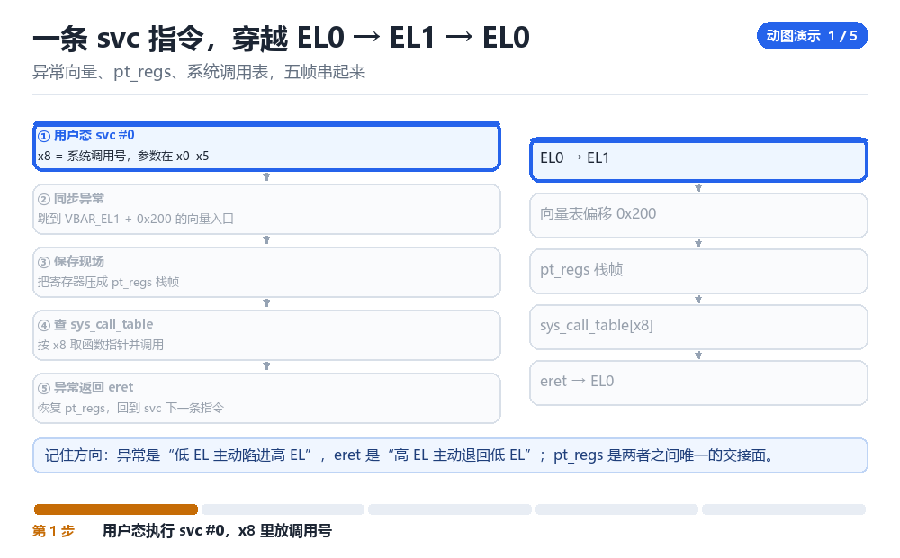

ARM64 异常、中断与信号
vector、pt_regs、syscall、IRQ、signal、debug trap
所有 hook 与 trace，本质都是“在异常入口插一脚”。

3.1 五种打断方式
| 类型 | 同步/异步 | 典型来源 |
|---|---|---|
| 异常 | 同步 | page fault、未定义指令、断点 |
| 中断 IRQ | 异步 | 外设、定时器 |
| 系统调用 svc | 同步 | EL0 主动陷入 EL1 |
| 信号 | 异步投递 | 内核替用户态“排队”一个处理函数 |
| 调试异常 | 同步 | 断点、单步、watchpoint |
3.2 四个必须记住的寄存器
ELR_EL1 // 异常返回地址（也是 hook 改返回去向的地方）
SPSR_EL1 // 保存的 PSTATE，其中 SS 位 = 单步使能
FAR_EL1 // Fault Address Register，出错地址
ESR_EL1 // 异常原因（EC 字段说明是哪类异常）pt_regs 是异常发生时压到内核栈上的一份完整现场（x0–x30、sp、pc、pstate）。hook 想改寄存器，改的就是这个结构；想改返回地址，改 pt_regs->pc。
3.3 单步是怎么实现的
把 MDSCR_EL1.SS 置 1，并把 SPSR_EL1.SS 置 1，异常返回后 CPU 每执行完一条指令就再陷入一次调试异常。这就是 M04 单步 trace 的硬件基础——不需要改任何代码，靠 CPU 自己停下来。
3.4 本章自测
- 同步异常与异步中断的区别是什么？
- 改 hook 的返回地址，改哪个寄存器或结构？
- 单步的开关涉及哪两个寄存器位？
- 为什么单步可能改变程序行为？
3.5 深入：一次系统调用的完整旅程
用户态执行 svc #0，CPU 从 EL0 陷入 EL1，走 vectors 里对应的入口，保存 pt_regs，然后根据 x8 里的系统调用号查表，跳到具体实现。返回时恢复现场，eret 回到 EL0。
| 步骤 | 发生什么 | 可 hook 的点 |
|---|---|---|
| svc 指令 | 陷入 EL1 | 替换 syscall 表 |
| 保存现场 | pt_regs 入栈 | 改寄存器 |
| 查表 | 按 x8 找实现 | 替换表项 |
| 执行 | 真正干活 | 函数入口 kprobe |
| 返回 | eret 回 EL0 | 改返回值 |
3.6 实战：用 kprobe 抓一次 openat
echo 'p:myopen do_sys_open dfd=%x0 filename=+0(%x1):string flags=%x2' \
>> /sys/kernel/tracing/kprobe_events
echo 1 > /sys/kernel/tracing/events/kprobes/myopen/enable
cat /sys/kernel/tracing/trace_pipe3.7 原理推演：为什么“异常”是 hook 的天然入口
因为异常是“CPU 主动交给内核控制权”的时刻。此时内核必然在做“保存现场 → 处理 → 恢复”这三件事，你只要在这条路径上插一脚，就能拿到完整的寄存器与内存访问权。
| 异常类型 | 能否 hook | 代价 |
|---|---|---|
| page fault | 能 | 中（高频） |
| 未定义指令 | 能 | 低 |
| 断点 BRK | 能 | 低 |
| 单步 | 能 | 高（每条指令都陷入） |
这就是为什么“硬件断点”比“改代码”更优雅：它利用的是 CPU 自带的异常机制，不需要改任何字节。
3.8 数据细节：ESR_EL1 的 EC 字段
0x00 未知原因
0x15 SVC32（AArch32 系统调用）
0x16 HVC32
0x18 MSR/MRS 或系统指令
0x20 指令 abort（低 EL，取指失败）
0x21 指令 abort（同一 EL）
0x22 PC 对齐错误
0x24 数据 abort（低 EL）
0x25 数据 abort（同一 EL）
0x26 SP 对齐错误
0x30 硬件断点（低 EL）
0x31 硬件断点（同一 EL）
0x32 软件单步（低 EL）
0x33 软件单步（同一 EL）
0x34 观察点 watchpoint（低 EL）
0x35 观察点（同一 EL）
0x38 BKPT（AArch32 断点指令）
0x3C BRK（AArch64 断点指令）处理异常时，先看 EC 就知道“这是什么类型的异常”，再决定走哪条处理路径。写 hook 时也一样：先判断 EC，再决定要不要介入。
3.9 深入：异常向量表的结构
ARM64 的 VBAR_EL1 指向一张 16 项的表，每项 0x80 字节。排法是“先按来源分四组，每组里再按同步/IRQ/FIQ/SError 排”：第 1 组来自当前 EL 且用 SP0、第 2 组来自当前 EL 且用 SP_ELx、第 3 组来自低 EL 的 AArch64、第 4 组来自低 EL 的 AArch32。所以偏移不是“按类型递增”，而是 组号 × 0x200 + 类型号 × 0x80。
| 偏移 | 来源 | 类型 |
|---|---|---|
| 0x000 | 当前 EL, SP0 | 同步 |
| 0x080 | 当前 EL, SP0 | IRQ |
| 0x100 | 当前 EL, SP0 | FIQ |
| 0x180 | 当前 EL, SP0 | SError |
| 0x200 | 当前 EL, SP_ELx | 同步 |
| 0x280 | 当前 EL, SP_ELx | IRQ |
| 0x300 | 当前 EL, SP_ELx | FIQ |
| 0x380 | 当前 EL, SP_ELx | SError |
| 0x400 | 低 EL, AArch64 | 同步 |
| 0x480 | 低 EL, AArch64 | IRQ |
| 0x500 | 低 EL, AArch64 | FIQ |
| 0x580 | 低 EL, AArch64 | SError |
| 0x600 | 低 EL, AArch32 | 同步 |
| 0x680 | 低 EL, AArch32 | IRQ |
| 0x700 | 低 EL, AArch32 | FIQ |
| 0x780 | 低 EL, AArch32 | SError |
hook 异常处理时，改的就是这张表里的某一项。但注意：表在只读段里，且被 KASLR 影响——要先找到它的运行地址。
3.10 深入：为什么“信号”是异步的
因为信号的投递时机不确定：内核可能在任意“返回用户态”的时刻检查挂起的信号。所以信号处理函数可能在任意两条指令之间被调用——这也是为什么信号处理函数里只能调用“异步信号安全”的函数。
void handler(int sig) {
printf("got %d\n", sig); // 不安全！printf 不是 async-signal-safe
// 正确做法：write() 或设置一个 volatile 标志
}3.11 实战：用信号做“反调试”
- 注册一个 SIGTRAP 处理函数。
- 如果调试器在单步，SIGTRAP 会被调试器先收到，你的处理函数不会被调用。
- 于是“处理函数没被调用”就成了“正在被调试”的证据。
异常向量、pt_regs、系统调用表，五帧串起来

把一根手指按在 svc 指令上
这一条指令之前，代码在 EL0，用的是 SP_EL0；这一条指令之后，同一个进程已经站在 EL1，用 SP_EL1，寄存器现场被整整齐齐压进内核栈。中间没有跳转、没有函数调用，只有 CPU 自己把异常级别抬了一格。你写的所有 hook，都是在找机会往这一格台阶上塞一只脚。
现场感来自一个事实：svc #0 指令里没有系统调用号。号在 x8，参数在 x0 到 x5，返回值会写回 x0。也就是说，一条看起来什么都没说的指令，靠约定把整个用户态的请求搬进了内核。
一条系统调用穿越内核的五拍
- 用户态 对 x8 放号：libc 把调用号写进 x8，参数依次放进 x0 到 x5，然后执行
svc #0→ 结果：CPU 把返回地址存进ELR_EL1、把 PSTATE 存进SPSR_EL1，切到SP_EL1。 - CPU 对 `VBAR_EL1` 取向量：按来自低 EL、AArch64、同步定位到偏移
0x400那一项，跳进el0t_64_sync→ 结果：进入内核异常入口，还没碰任何 C 代码。 - `kernel_entry 0` 对 内核栈 铺现场：把 x0 到 x30、sp、pc、pstate 压成一个
pt_regs→ 结果：内核从此有一份可随意读写的用户现场；hook 改参数就是改这块内存。 - `el0_svc` 到 `do_el0_svc` 对 `sys_call_table` 查表：拿
pt_regs->regs[8]当索引调用对应实现 → 结果：目标系统调用真正跑起来，返回值写回pt_regs->regs[0]。 - `ret_to_user` 对 挂起信号 顺便查一次账：先看
TIF_SIGPENDING，有信号就先搭好用户栈帧跳去 handler，否则直接eret→ 结果：ELR 与 SPSR 复原，进程回到 EL0，像什么都没发生过。
第 5 拍是很多人栽跟头的地方：信号不是在产生的那一刻被处理的，而是在每次准备返回用户态的路上被顺手检查。所以一个信号可能卡在任意两条指令之间才落地；也所以信号处理函数里只能调用异步信号安全的函数——它脚下踩的是被打断的栈，不是干净的调用栈。
同步、异步、调试：三条入口分清楚
- 外设 对 GIC 拉高一根 IRQ 线：中断是异步的，与当前正在执行的指令无关 → 结果：CPU 在指令边界接受，走
VBAR_EL1偏移0x480那一项。 - `el0_irq` 对 `pt_regs` 同样铺一份现场，但紧接着调
irq_handler→ 结果：中断处理跑在中断上下文里，不能睡眠、不能拿可能睡眠的锁。 - `MDSCR_EL1.SS` 加 `SPSR_EL1.SS` 对 每条指令 加一拍：
eret之后 CPU 执行完一条就再报一次调试异常 → 结果：单步不靠改代码，靠 CPU 自己停；ESR_EL1.EC会显示对应的调试异常原因。 - 断点指令 `brk` 对 当前 pc 制造同步异常：走
el0t_64_sync的 debug 分支 → 结果：调试器拿到 SIGTRAP，并把pt_regs->pc回退或前移来对齐。 - hook 代码 对 `pt_regs` 与 `ELR_EL1` 动手：改
regs[0]换参数，改pc换返回去向 → 结果：用户态看到的世界被改了，而它自己毫不知情。
| 向量表偏移 | 触发条件 | 入口做了什么 | 能不能睡眠 |
|---|---|---|---|
| 0x400 | 低 EL、AArch64、同步：svc、brk、缺页 | kernel_entry 0 后分派 el0_svc / el0_dbg / el0_da | 能，系统调用路径可睡眠 |
| 0x480 | 低 EL、AArch64、IRQ | kernel_entry 0 后调 irq_handler | 不能 |
| 0x600 | 低 EL、AArch32、同步 | 走 compat 入口，寄存器按 32 位映射 | 能 |
| 0x200 | 当前 EL、SP_EL1、同步 | el1h_64_sync，内核态自己出错或 brk | 视具体路径而定 |
| 0x280 | 当前 EL、SP_EL1、IRQ | el1h_64_irq，内核态嵌套中断 | 不能 |
把一次 svc 的账本翻出来
# 1. 让进程停在一个系统调用上，然后读它自己的现场
cat /proc/self/syscall
# 输出格式：调用号 arg0..arg5 sp pc
# 成功：第一列是非负调用号（读这个文件用的正是 read 系列）
# 失败：显示 running 或 0 -1 -1 => 当时不在系统调用里，用 gdb 断住再读
# 2. 用 strace 看号是怎么被送进去的（号本身不出现在指令里）
strace -e trace=openat,read,write -o /data/local/tmp/svc.txt cat /proc/self/status >/dev/null
grep -E 'openat|read' /data/local/tmp/svc.txt | head -6
# 成功：read 行末尾的返回值，就是写回 x0 的那个数
# 失败：全是 ???? 或 EPERM => ptrace 被 seccomp / SELinux 挡了，先查 TracerPid
# 3. 看挂起信号与屏蔽字，对应上面第 5 拍
grep -E '^(SigPnd|ShdPnd|SigBlk|SigIgn|SigCgt)' /proc/self/status
# 成功：SigCgt 里出现某一位 => 该信号注册了 handler，返回用户态时会被检查
# 4. 对照寄存器现场（需 gdb 或内核态）
gdb -q -batch -ex 'info registers' -p 1 2>/dev/null | head -5
# 成功：读得到 pc、sp、pstate；失败多半是 ptrace_scope 或权限，换 root 再试第 1 条命令最值得反复敲：/proc/self/syscall 把当前正在执行的那个系统调用的号、六个参数寄存器、栈指针与 pc 一口气摊开给你看。它比 strace 更接近现场，因为它读的就是内核替这个进程保存的那份 pt_regs。拿它和 strace 的输出对一遍，号在 x8、参数在 x0 到 x5 这件事就从纸面变成了事实。
把这条结论带走：所有打断都会留下一个可改写的 `pt_regs`。第三部 F07 的 Stalker 与 F06 的默认 Hook，本质都是在用户态复刻这套保存现场、改写、恢复现场；第四部 M04 直接把 MDSCR_EL1.SS 打开做内核单步，M05 的硬件断点与这里的 brk 共用同一条调试异常入口；连 K05 的 kprobe 也是靠插入断点异常才拿到寄存器。想改现场，先找到现场在哪。